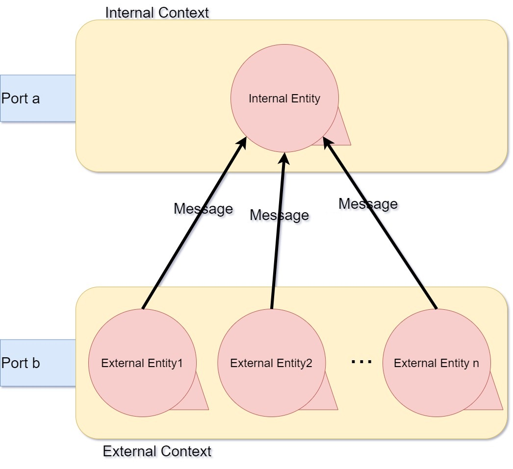
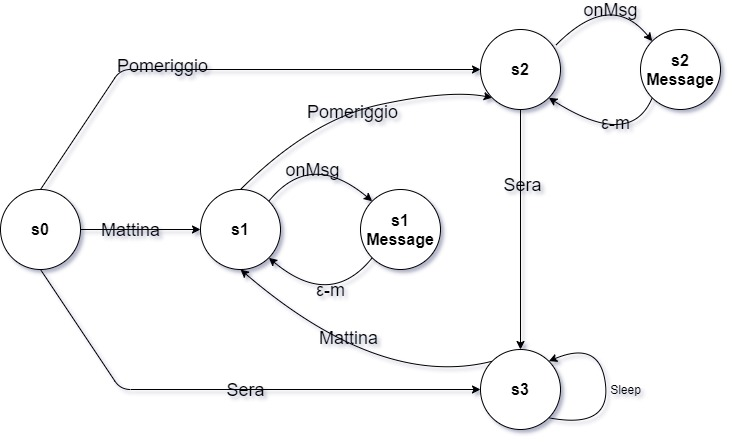
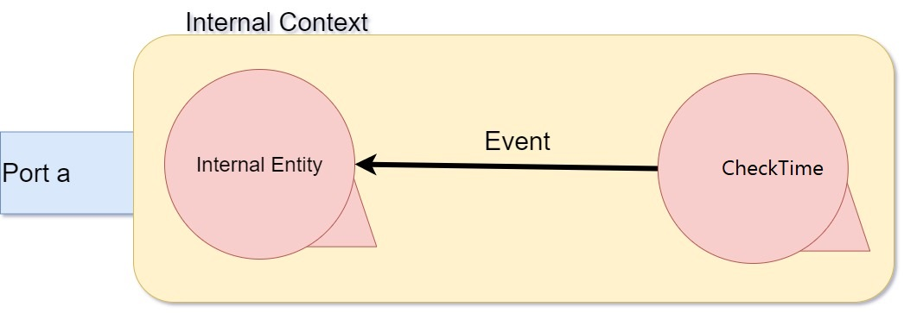

Introduction
Software System project using distributed QActorK. Developement of the theme ES0.
Requirements
Requirement analysis
After interviewing client, meaning he associates with nouns have been clarified:
Problem analysis
Aspect noted
-
There are three different period of the day, Morning, Afternoon and Night.
Any of this periods can be intended as different states in which our machine can be during the day.
-
It's not specified the specific moment in which the machine will be started. For this reason, at startup
the machine will take the state according to the time of the day in which it is.
-
Messages are sent from external entities without any kind of request by the internal entity, then
those will be sent with Dispatch mode (Fire and Forget).
-
Considering that messages are sent at any moment and without regulation on which type by the extenarl entities, those will be placed in a queue and handled in their specific turn.
-
For this project is requested the use of the QActorK.
Logical Architecture
-
This software system is distributed. The intenarl entity is situated in a context that we assume as "Internal". In this contex is situated the machine that have to change on the three
described turn, and have the goal to handle the received messages.
-
The extenarl entities intead are situated in another context that we have called "External". In the picture on the side is rappresented an architecture with only one external context. But this is not specified
explicitly, then could exist more than one external context. Every context can contain more entities. Those entities have the goal of sending messages to the internal entity at every time
with no specified regulation.
-
Messages that are sended have this kind of syntax: m1:m1(arg) or m2:m2(arg). arg indicates the content of the message.
When those arrive to internal machine, it's not for sure that will be handled immediately. For this reason those are placed in a queue and handled in their specific turn.
|

|
State Model
|
At the application startup the machine is in state s0. In this state it's checked the actual hour, on the basis of which will be decided the correct state.
-
Morning turn (s1)
- Morning turn message (s1 Message)
-
Afternoon turn(s2)
- Afternoon turn message (s2 Message)
-
Night turn (s3)
The Internal Entity actor waits for a message, if none have arrived yet, or check the queue. Then passes in the state in which messages are handled.
At the end it returns to control state.
|

|
|
The change of turn (s1➟s2, s2➟s3, s3➟s1) is decided by the arrive of an event.
For this reason it's necessary to introduce an another entity that help the machine.
This new entity is internal (placed in the Internal Context), and cyclically check the current hour.
When the actual time corresponds to the start time of a state, this entity send and event to the machine which switchs to the next state.
|

|
Test plans
Project
Testing
Deployment
Maintenance